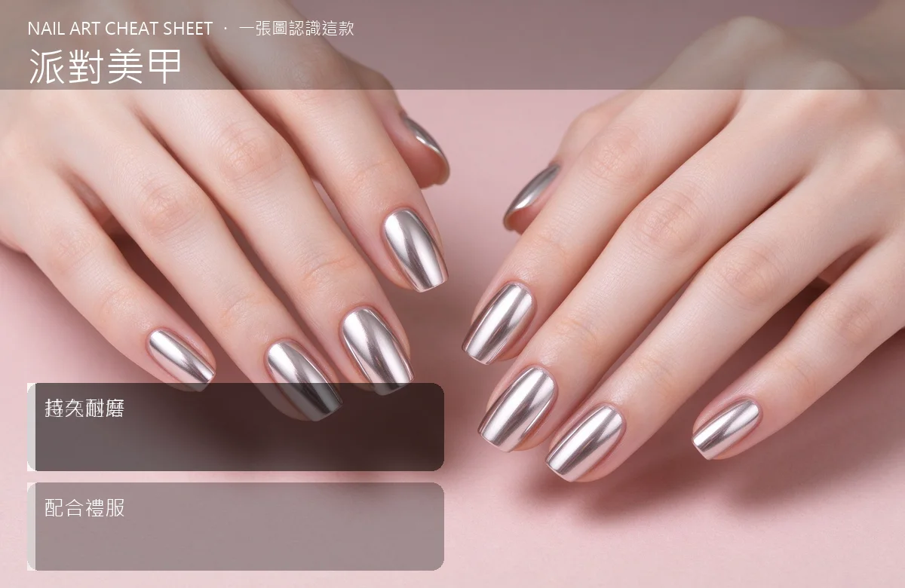

美甲派對美甲是什麼？入門入門攻略
派對美甲就是『燈光下越閃越好』，鏡面、亮片、水鑽全部都可以拿出來。
派對美甲原理與辨識重點：美甲師不說的越亮越好
派對款的目標只有一個：在夜店的紫外燈、餐廳的水晶燈、跨年的煙火下，你的手會發光。所以做法通常是深色底（黑、酒紅、墨綠）加上大亮片、鏡面粉、滿鑽貼飾，整體華麗到誇張。
誰適合做派對美甲？夜店款對號入座
要去夜店、跨年、生日趴、毕业舞會、或參加朋友求婚派對的人；平常走低調路線、想偶爾大膽一下的人。
派對美甲美甲施作步驟：亮片＋鏡面
上深色底照燈 → 跳指做大亮片滿版或鏡面封層 → 想要滿鑽款就在甲面用凝膠貼一排小水鑽 → 壓緊 → 封層把水鑽根部包好 → 最後檢查有沒有勾頭髮。
派對美甲優缺點分析：美甲持久度與傷甲評估
| 優點 | 說明 |
|---|---|
| 效果震撼、拍照很搶眼、當晚氣氛滿點。 | 是通用流派的招牌，入門就能上手 |
| 缺點 | 說明 |
| 派對結束就會覺得太誇張想卸；持久度看起來撐不過一週；勾頭髮、勾絲襪是家常便飯。 | 前置與別在派對前一天才第一次做滿鑽款——萬一不習慣、卡住、或水鑽掉了，當天來不及補。先試戴一次。沒顧好會打折 |

派對美甲新手雷區：持久耐磨與常見錯誤
注意：別在派對前一天才第一次做滿鑽款——萬一不習慣、卡住、或水鑽掉了，當天來不及補。先試戴一次。
派對美甲和其他美甲做法的差別比較
跟『亮片美甲』很像，但派對款更進階：會混合鏡面、水鑽、金屬飾品，不只靠亮片一種元素。
派對美甲美甲常見問題 FAQ
Q：派對甲可以撐多久？ A：純亮片款可以撐 2–3 週，滿鑽款通常一週後就開始掉鑽，本來就是設計成『短期華麗』。
Q：去夜店紫外燈下會不會特別亮？ A：會，可以跟美甲師指定『夜光膠』或『反光粉』，燈一關你的手比舞台還亮。
Q：隔天要上班怎麼辦？ A：前一天先跟美甲師說好，用可撕式小飾品或穿戴甲，下班拆掉就回到一般通勤款。